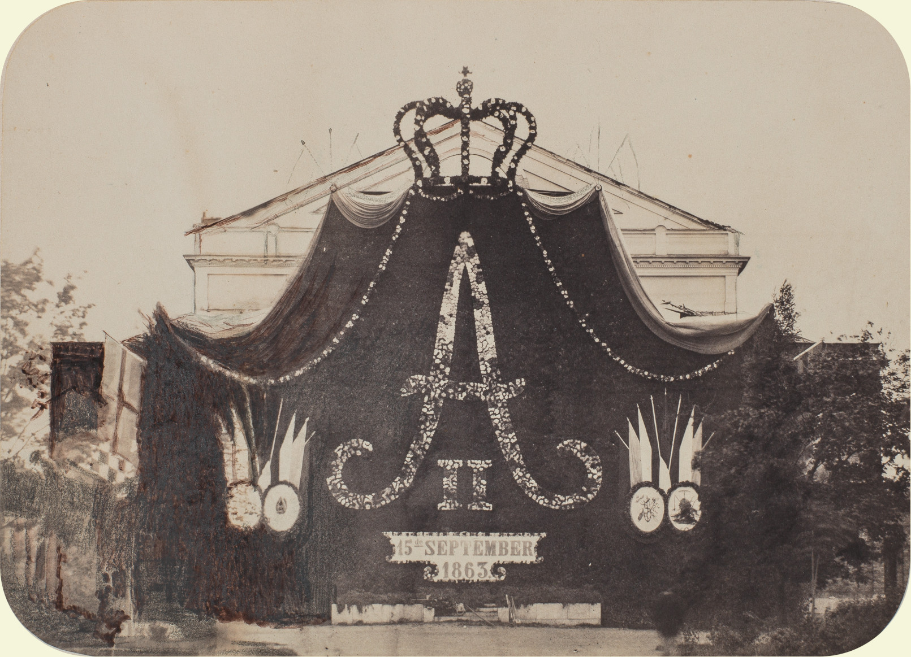
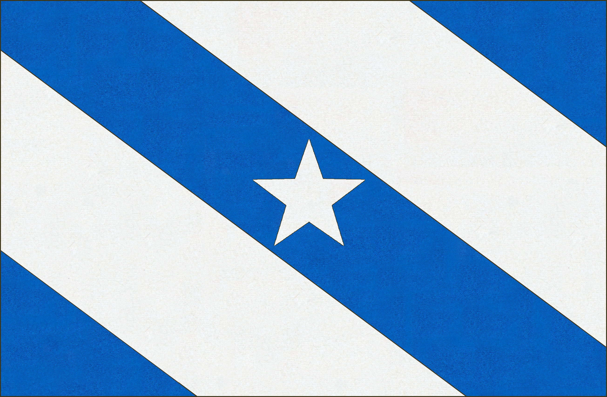
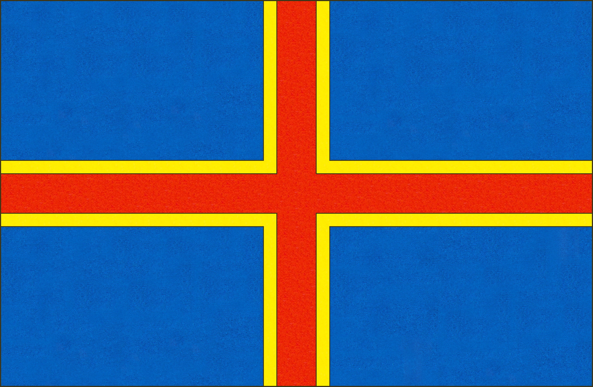
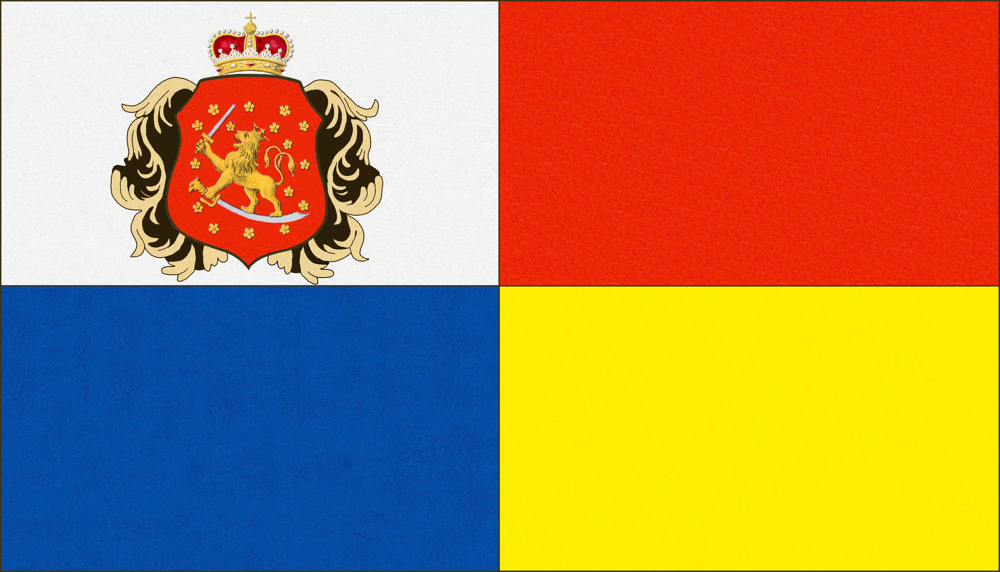
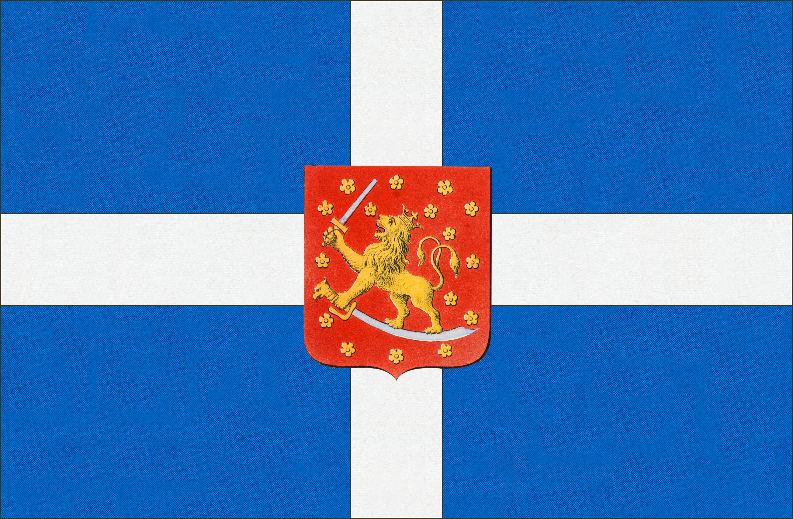
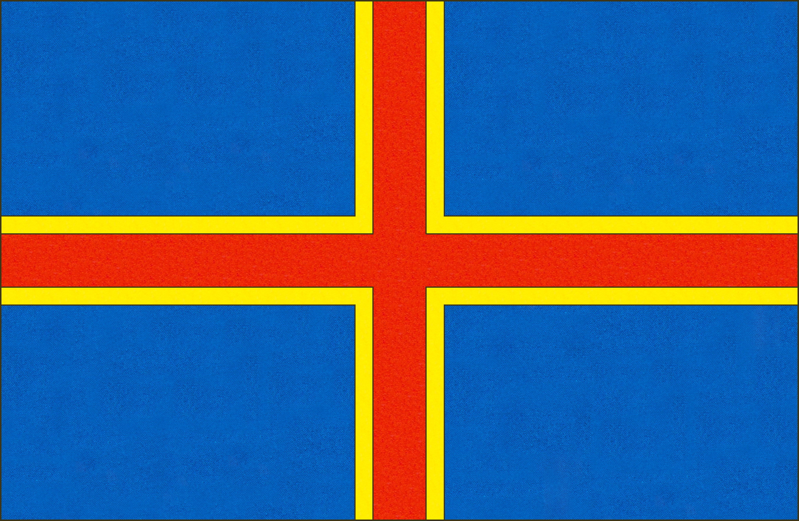
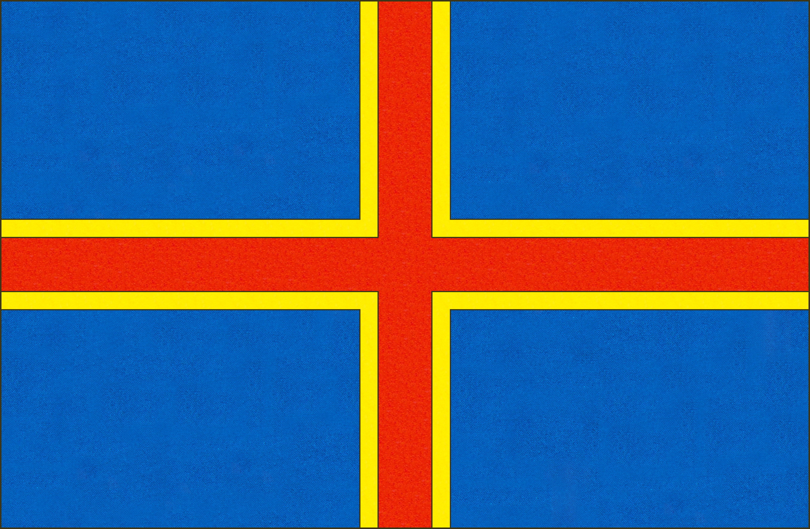

Hårdh, C. Juhlakoristelua Ruotsalaisen teatterin edustalla Aleksanteri II:n
vierailua varten 28 heinäkuuta 1863. Helsingin kaupunginmuseo.
Suomessa virisi 1860-luvulla keskustelu omasta suomalaisesta lipusta. Tuohon aikaan kansallisessa ilmapiirissä
vallitsi vahva toiveikkuus, ja ihmiset alkoivat pohtia, miksi Suomen tulisi omistaa oma raha, oma kieli ja omat
valtiopäivät, mutta ei myös omaa lippua.
Kansallismielisten aktivistien lisäksi myös suomalaiset laivanvarustajapiirit olivat
erityisen aktiivisia tässä keskustelussa. He kannattivat oman, Venäjän ulkopolitiikasta riippumattoman kauppalipun
käyttöönottoa. Taustalla oli äskeisen Krimin sodan aikainen Venäjän lipun alla purjehtineiden suomalaisten
kauppalaivojen hävitys Iso-Britannian toimesta.
Vuoden 1863 valtiopäivillä aatelissääty toi esiin kysymyksen
suuririhtunaskunnan omasta kauppalipusta. Aateliset toivoivat, että asia tuotaisiin Keisari Aleksanteri II:n
käsiteltäväksi hänen vieraillessaan Helsingissä. Aatelissäädyn puheenjohtaja, maamarsalkka Nordenstam,
kuitenkin torppasi aiheen käsittelyn vedoten siihen, ettei suuriruhtinaskunnan perustuslaissa ollut mainintaa omasta
lipusta. Julkinen keskustelu lipusta hyytyi tähän, mutta yksityiset tahot jatkoivat kuitenkin epävirallisten
lippujen käyttöä tämän jälkeenkin. Erimuotoisia punakeltaisia ja sinivalkoisia lippuja käytettiin huviloissa,
maatalousnäyttelyissä ja muissa juhlatapahtumissa Venäjän virallisen lipun rinnalla.
Fredrik Nylanderin ehdotus
Julkisen keskustelun Suomen tulevasta lipusta aloitti Oulun kaupunginlääkäri Fredrik Nylander
Oulun Wiikko-Sanomissa 12.07.1862. Hänen ehdotuksensa valtiolipuksi
oli punainen lippu jonka keskellä oli taidemaalari Elias Brennerin (1647-1717) vaakunamallin
mukainen Suomen leijona. Kauppalipuksi hän ehdotti neliruutuista mallia.
» Suomenmaan vaakunan tunnemme kaikki. Se on yhdessä etukäpälässä pystöä miekkaa ja toisessa alaspäin olevaa sapelia
pitävä ja sen päällä seisova jalopeura, jonka ympärillä ovat ruusut, punaisella pohjalla. Varsinaisen Suomen eli
nykyisen Turun ja Porin läänin vaakunassa oli myös punainen ja osittain hopeankarvainen pohja. Siitä luulisi että
Suomen valtio-lipun pitäisi oleman punaisen ja sen keskellä Suomen jalopeuran kuvan ja mitä muuta siihen mahtanee
kuulua.
Kauppa-lipulla on eri laita, koska koristukset ja kuvat siinä ovat sopimattomat sekä liikanaiset;
ja varmaan osittain siitäki syystä monet valtiot sitä ovat eroittaneet valtio-ja sota-lippu väreistään.
Näin Venäjällä on Hollannin kauppa-lippu sillä muutoksella vaan, että värit ovat toisella lailla järjestyt.
Venäjän keisari Pietari I toimitti tämän lipun. Suomelle siis olisi myös vaali tässä kohdassa vapaa, mutta tuntuu
se kuitenkin luonnollisemmalta, että valtion värit tässäki lipussa käytetään niinkuin useammassa valtakunnassa on
tehty; vaan mitkä namat tarkkaan ovat, on vaikea esitellä. Punainen väri on epäilemättä siihen kuuluva, hopea myös
tuntuu siltä, koskea se hohtaa Suomen vaakunassa, olkoon siis mielestämme Suomen tulvainen kauppa-lippu punainen ja
hopeainen eli valkea, ja nämät värit siihen sillä tavalla asetetut, että kaksi eriväristä neliöä pantaisiin
vieretysten ja koko lippu tulisi tehdyksi ainoastaan neljästä väri-osasta, jotka olisivat ristissä. »
[lähde]
Marstrandin lippu
Topelius osallistui tuttaviensa kanssa vuonna 1862 purjehduskilpailuun Ruotsin Marstrandissa, jossa seurue loi
kilpailua varten Suomea edustavan lipun. Kirjailijan vaimo Emelie Topelius tiettävästi ompeli kyseisen lipun.
Uuden lipun innoittamana Topelius kirjoitti runon joka ylisti Suomen lippua sinisenä ja valkoisena. Kun keskustelu
Suomen lipusta alkoi seuraavana vuonna lehdistössä, Topelius lähetti runonsa julkaistavaksi Helsingfors Tidningar
-lehteen 15.06.1863. Runon liitteenä hän kertoi Marstrandin edellisvuotisesta liputuksesta:
» Syy kyseiselle lippurunolle oli seuraavanlainen. Marstrandin lukuisista suomalaisista muodostettiin viime kesänä
purjehdusseura, joka rakensi kunnioitettavan veneen ja otti ruorimieheksi ja luotsiksi Marstrandin vanhimman
purjehtijan, ukko Fägerstenin. Nyt olivat kaikki Marstrandin purjeet valmiina suureen kilpailuun, ja sinikeltainen
Ruotsin lippu alkoi heilua mitä juhlavimmin kaikissa mastoissa. Suomalaisella veneellä olisi tietysti oleva Suomen
lippu, mutta mikä, se oli kysymys. Miltä Suomen lippu itse asiassa näytti?
"Ylimääräiset valtiopäivät" pohtivat tätä kysymystä ja päättivät yksimielisesti, että Suomen lipun värit eivät voi
olla muut kuin valkoinen ja sininen. Tämän muotoisissa valtiopäivissä päätökset tehdään nopeasti. Ajatus sai heti
asianmukaisen hyväksynnän korkeimmalta taholta, nimittäin purjehdusseuran nuorilta naisilta, jotka ottivat asian
innostuneesti omakseen. Ei kestänyt kauan, kun upea lippu, yläpuolisko valkoinen, alapuolisko sininen, oli nostettu
suomalaisen veneen mastoon, ja jotta kaikki ihmettelyt sen kansallisuudesta saataisiin ratkaistua, sen yläkulmaan
oli kirjailtu kruunattu suomalainen leijona kaikkine lisävarusteineen. »
[lähde]
Zacharias Topeliuksen ehdotukset
Topelius jatkoi purjehduskilpailun jälkeenkin lippuasiain parissa ja oli ensimmäinen joka julkisesti liputti
sinivalkoisten värien puolesta. Vuoden 1863 aikana hän ehdotti useampaa eri mallia kyseisillä väreillä.
Topelius kirjoitti 09.06.1863 puolustuspuheen sinivalkoisten värien puolesta Helsingfors Tidningar -lehdessä
”Undecumque”-nimimerkin alla:
» Sallittakoon seuraavassa ehdotus lipun väreistä käsityksemme mukaan: Nuori kansa, joka astuu maailman
parrasvaloihin kuin vielä kirjoittamaton lehti tulevaisuuden historiassa, voinee valkealla värillä parhaiten
kuvata uutta asemaansa. Valkoinen on nuorten puku, kun he astuvat Herran pöytään vastatakseen sen jälkeen itse
tekemisistään. Lippu konfirmoi Suomen merenkulun. Valkea on maamme väri satamamme sulkevien kuuden pakkaskuukauden
aikana - kuten sanottu, Suomen lippu on luonnonvälttämättömyys.
Mutta siksi mukana on oltava toinenkin väri,
joka kuvaa järviemme ja satamiemme vapautta, kun kaikki purjeet paisuvat ja kiitävät merille, nimittäin sininen.
Pitäisikö meidän olla sokeita viitteellemme, joka tulee Suomen kartasta, joka on suurilta osin sininen sekä sisäpuolelta,
että ulkopuolelta? Meren tyttärenä, josta se on noussut, ja josta kohoaminen edelleen jatkuu, Suomen on lipussaan
käytettävä pohjoisten merien molempia värejä, valkoista ja sinistä, sulkevan jään ja avoimen veden värejä. Valkoinen
ja sininen ovat myös niiden maiden värejä, joihin meidän historialliset muistomme liittyvät, mutta niihin ei sisälly,
kuten punaiseen ja keltaiseen, hallitseva, vaan vapaa, ystävällismielinen, perinteinen merkitys. »
[lähde]
Topelius kirjoitti 20.03.1863 päivätyssä kirjeessään Pietarsaarelaiselle merikapteeni P. G. Böckelmanille ehdotuksestaan Suomen
kauppalipuksi. Hän liitti kirjeen loppuun
piirroksen lipusta sekä ensimmäisen säkeen hänen "Finlands flagga" runostaan.
» Kuulisin mielelläni herra kapteenin mielipiteen liitteenmukaisesta projektista Suomen kauppalipuksi jossa on
pohjantähti keskellä. Tiedän että sillä on omat puutteensa, kuten vinoon leikatun kankaan nopeampi kuluminen,
mutta olemme täällä monista vaihtoehdoista pitäneet tätä kuitenkin kauneimpana, ja Suomen värit ovat valkoinen ja sininen.»
[lähde]

Topelius jatkoi sinivalkoisten mallien esittämistä "Undecumque" -nimen
alla kirjoituksessaan Helsingfors Tidningar -lehdessä 13.06.1863.
» Mikäli valkoinen lippu sinisin kulmin, ja sen yli asetettuna vinosti kulkeva palkki jonka keskellä on valkoinen
pohjantähti, kuten on aikaisemmin ehdotettu, on vaikea toteuttaa, tämä ei suinkaan ole ainoa tapa asettaa nämä värit
vastakkain. Voidaan joko laittaa valkoinen latinalainen risti sinisen pohjan päälle, tai ylin puolikas valkoinen ja
alempi sininen, tai myös valkoinen pohjantähti yksinään sinisen lipun päällä. Mikään näistä yhdistelmistä ei ole
käytössä muilla kansakunnilla, eikä kenelläkään purjehtijalla ole vaikeuksia kevyessä tuulessa erottaa näitä kahta
väriä toisistaan, kun taas Dagbladin lippu voidaan helposti sekoittaa Ruotsin unionilippuun. »
[lähde]
Fredrika Runebergin muunnelma Topeliuksen lipusta
Fredrika Runeberg ehdotti kirjeessään 24.02.1863 Topeliukselle,
että hänen lippuehdotuksen leikkaukset muutettaisiin vaakasuoriksi.
» Hyvä Herra Professori
Sitten kun olimme ehtineet rauhoittua matkallamme, ajatukseni liikkuivat
vilkkaasti Suomen lipussa. Nimittäkää sitä sitten vaikka ”naisten juoneksi”, ”räätälinviisaudeksi”, tai
miten Herra Professori vain haluaa, mutta minun on kuitenkin sanottava, että mieleeni nousi epäily,
olisiko tuo kaunis lippu oikein käytännöllinen. Reunat tulevat viistoon, ommeltaessa sitä on vaikeaa
päärmätä, ja langat vetävät vinoon. Sen lisäksi lippu tulee liehumaan kankaan vinosuunnassa. Tämä tekee
lipusta täysin toisenlaisen kuin lankasuoran ollessa kyseessä. Kostea tuuli vetää ehkä kaiken kasaan.
Heti kotiin päästyäni minun täytyi yrittää kursia kokoon pieni lippu, se vahvisti ajatukseni oikeaksi.
En aikonut ensin rohjeta esittää havaintoani kysymyksestä, joka on niin suuri, että ”mitä se naisille kuuluu”.
Ja huomautukseni koskee kuitenkin vain ompelua, ja niissä asioissa meillä ompelijoilla on sentään oltava hivenen
lahjoja. Suokaa siksi anteeksi, että uskallan esittää epäilyni. Olisin iloinen, jos asiantuntijat pitäisivät sitä
epäoikeudenmukaisena ja tarpeettomana, sillä ehdotettu lippu on totisesti kaunis.
(...)
Otan itselleni
vapauden liittää mukaan pienen lippuni näyttääkseni millaiseksi olen sen ajatellut, kuitenkin ilman tähteä, jota
ei tarvita tähän tarkoitukseen. Jos viisto ei nyt kelpaa, niin ehkä sama muoto raidat lipun pituussuunnassa, se
olisi kaunis tähdellä varustettuna. Eikö sellainenkin piirros ollut olemassa? Kolme sinistä, kaksi valkoista raitaa. »
[Kajanti 1983: 238]
Carl Forsmanin ehdotukset
Senaatin oikeusosaston esittelijäsihteeri Carl Frederik Forsman esitti kaksi ehdotusta Finlands Almänna
Tidning -lehden numerossa 01.06.1863 käyttäen nimimerkkiä "C.F.".
»Suomen vaakunan pääkomponentit ovat siis kultainen leijona ja verenpunainen kenttä. Tästä seuraa, että Suomen
värit ovat kultainen ja punainen. Kuten hyvin tiedetään, heraldiikassa kulta voidaan korvata keltaisella ja
hopea valkoisella, jos kultaa tai hopeaa ei jostain syystä voida käyttää. Voidaan siis käyttää joko kultaista ja
punaista tai keltaista ja punaista. Kultainen, tai keltainen, on pääväri ja on hallitseva punaiseen nähden,
koska vaakunaeläin on keltainen. (..)
Suomen värejä kultaista ja punaista voidaan käyttää lipussa eri
tavoin. Yksinkertaisin olisi tehdä lipun yläpuoli keltaiseksi ja alapuoli punaiseksi samalla tavalla kuin
Lyypekin vaakunan värejä käytettiin Lyypekin lipussa. Lipussa voi käyttää myös kristinuskon symbolia, ristiä,
jolloin risti on keltainen punaisella taustalla; ristin muoto ei kuitenkaan saisi olla Pyhän Andreaksen risti,
vaan tavallinen latinalainen risti. Ristiä on usein käytetty lipuissa; niinpä Ruotsin lippu muodostuu
keltaisesta rististä sinisellä pohjalla, Tanskan lipussa on valkoinen risti punaisella pohjalla,
Hansalippujen lipussa on punainen risti valkoisella pohjalla, kreikkalaisten lipussa on valkoinen risti
vaaleansinisellä pohjalla.
Tämä yksinkertainen lippu olisi Suomen kauppalippu. Suomen valtiolippu
vastaa kauppalippua, mutta siinä on valtiolippujen tapaan oltava myös Suomen vaakuna keskellä. »
[lähde]
Dagbladsflaggan
Vastineena Carl Forsmanin ehdotuksen synnyttämään keskusteluun, Helsingfors Dagblad julkaisi 10.06.1863
pääkirjoituksen, jossa lehti esitteli oman ehdotuksensa Suomen lipuksi. Kaikista 1860-luvun ehdotuksista
tämä sai eniten kannatusta.
» Ei ole kaikkein helpointa lisätä niin moniin jo olemassa oleviin lippuihin uutta lippua, jolla on sekä kauniit
että omaleimaiset ominaisuudet. Jos lipun halutaan olevan sopusoinnussa kansan historian ja maan heraldisten tai
runollisten symbolien kanssa, tehtävästä tulee vielä vaikeampi. Uskomme kuitenkin, että ongelma voidaan ratkaista
täällä Helsingissä ehdotetulla lipulla, jota kuulemamme merimiehet ja laivanvarustajat ovat suosineet.
Tämä lippu muodostuisi keltaisesta, sinireunaisesta rististä punaisella pohjalla. Ruotsin lippu koostuu
tunnetusti keltaisesta rististä sinisellä pohjalla, Tanskan lippu valkoisesta rististä punaisella pohjalla
ja Norjan lippu sinisestä rististä, jossa on valkoiset reunat punaisella pohjalla. Kaikista näistä Skandinavian
lipuista Suomen lippu voidaan siis erottaa ensi silmäyksellä. Siitä ei puuttuisi Suomen sininen väri, joka on
jo pitkään hyväksytty, kuten C. F:n ehdottamasta lipusta puuttuu, eikä lippua olisi vaikea erottaa kevyessä tuulessa
tai se menettäisi säännöllisen muotonsa tuulen vaikutuksesta, kuten tapahtuisi, jos lippuun lisättäisiin
sininen vinopalkki, joka on ainoa mahdollinen muoto sinisestä ja valkoisesta koostuvalle lipulle. Valkoinen
lippu sinisella vinopalkilla on sitä paitsi vaikea eroittaa Venäjän keisarillisesta lipusta, jossa on sininen
Andreaksen risti valkoisella pohjalla.
On erittäin tärkeää, että koko maata koskevan yhteisen
kauppalipun käyttöönotosta päästään mahdollisimman pian yhteisymmärrykseen. Uskomme, että ehdottamamme lippu on
kaikin puolin tunnustuksen arvoinen. Sen puolesta puhuvat historia ja heraldiikka, ja se näyttää kiistatta
hyvältä tuulessa liehuessaan. Se, että sen pohjaväri on punainen, on enemmän kuin perusteltua jokaiselle, joka
pohtii maamme tähänastista kohtaloa. Ja keltainen väri ei ole "kuihtumisen" vaan "keltaisen maljan" väri, eli
viljan ja kullan väri: verellä hedelmöitetyltä pellolta saamme korjata rauhanomaisen ahkeruutemme sadon. Sininen,
teräksen väri, on työvoiman ja isänmaalle osoitetun uskollisuuden väri. Siksi se ympäröi oikeutetusti kultaa.
Tämä puna-sinikeltainen lippu ei ole yltiökirjava, mutta se näyttää värikkäältä tuulessa. Se on
erilainen kuin mikään muu: kovalla työllä saavutettu etuoikeus. Ja siinä on luterilainen risti, uskontomme symboli! »
[lähde]
Otto Donnerin ehdotus
Maisteri Otto Donner julkaisi "Arno" salanimen alla heinäkuussa 1863 16-sivuisen kirjasen nimeltä
"Om Finlands flagga" jossa hän asettui Dagbladetin ehdottamaa ristilippua vastaan ja esitteli oman
versionsa Topeliuksen vinomallisesta lipusta.
» Kolme syytä puoltaa sen hyväksymistä.
Sen puolesta puhuu historia. Suomen kauppalaivasto on yli viidenkymmenen vuoden ajan käyttänyt lippua,
jossa on kolme väriä: valkoinen, sininen ja punainen. Se on meille vakiintunut käyttöön. Meillä oli
ennen yhteinen lippu Ruotsin kanssa, mutta silloin olimme vain maakunta. Ja sinistä väriä voidaan pitää
muistona siitä ajasta. Nämä kolme väriä, jotka Pietari Suuri toi Hollannista, ovat edelleen
hollantilaisten ja ranskalaisten käytössä, eivätkä siten ole yksinomaan Venäjän värit. Nyt
omaksuttuina ne osoittaisivat, että Suomi aloitti vuodesta 1808 alkaen omalaatuisen kehityksensä
erillisenä valtiona, mikä Ruotsin aikana ei tullut kysymykseen. Sininen väri voi olla myös symboli
Suomen sinisille järville, valkoinen vaahtoaville aalloille. Se on meille ikiajoista rakas; ja
ruotuväen soturit ja vartijat käyttävät nykyään niitä väreinään; sinistä ja hopeaa. Punainen taas
merkitsee, kuten sanottiin, niitä verisiä vuoroja, joita Suomen kansa on menneinä aikoina kestänyt;
sitä verta, joka taistelussa hukkui lumen sekaan ja joka valui sankareiden poskilta.
Sitä ei voi sekoittaa mihinkään muuhun maailman lippuun. Se on uusi ja omalaatuinen ja se erottuu muista
lipuista sekä tuulessa että tyynessä. Tämän lisäksi
Se antaa kuvan erillisestä kansasta. On tärkeää, että kun lipun näkee ensi kerran, sekä ulkomaalainen
että me itse saamme edustavan vaikutelman uudesta kansasta joka astuu esiin historiassa erillisenä kansana.
Se on kaunis. Ja kyse ei ole vain yksittäisestä mielipiteestä. On yleisesti tunnustettu, että Ranskan,
Hollannin ja Venäjän trikolorit, jossa sinistä ja punaista väriä tukee valkoinen, ovat kauneimpia
lippuja joita on. Tässä lipussa samoin, mutta eri tavalla. Lippu, jossa on valkoista, näkyy helposti
kun se leijuu kuin pilvi purjeiden yllä. Punaiset kentät jotka valkoista rajaavat, näyttävät kuin
veressä upotetulta, joka tuo eittämättä mieleen Runebergin Sandelsin:
"Ohi joukkojen kun veripurppurassaan, nyt lensi hepo valkoinen" »
[lähde]
Helsingin Uutisten ehdotukset
Helsingin Uutiset julkaisi pääkirjoituksen 20.07.1863 jossa
lehti kritisoi Dagbladin lippua ja esitti kolme vaihtoehtoa.

» Ylipäänsä emme soisi, että tämmöinen asia tehtäisiin puolueen-asiaksi, kuten Dagblad'in Skandinavialainen
ehdotus sen tekee. Ehdotuksia sopii tehdä monenlaisia ja Säädyt Hallituksen kanssa niistä valitkoon. Jos
muinaisen Ruotsin-vallan muistoks tahdotaan lippuumme keltaista väriä, niin pantakoon kolme raitaa: sininen,
keltainen ja punainen. Jos risti katsotaan tarpeelliseksi (Lontoo, Genua ja Sardinia, eikä yksistään Itämeren
seudut, kantavat ristin lipussaan), niin miks'ei punainen kelta- tai viheriäreunainen risti sinisen pohjan
päälle? Mutta Dagbladin ehdotukseen me puolestamme emme voi suostua. »
[lähde]
Tapion ehdotus
Kuopiolainen sanomalehti Tapio esitti oman ehdotuksensa 08.08.1863:
» Kuin nyt jokainen sanomalehti ja melkein joka mies, joka muka vähänkin
tahtoo aikaansa seurata, näkyy pitävän velvollisuutenansa tekaista jonkun uuden lippu-ehdotuksen, niin ei
Tapiokaan tahdo olla Pekkoja pahempi ja siis ehdottelee Suomen lipun neljästä yhden kokoisesta, vähän soikeasta
kappaleesta, joista ommellaan kaksi runnakkain ja kaksi päällekkäin, niin että warren puolelle tulee walkonen
ylä- ja sininen alapuolelle, sekä kärkeen punanen ylös- ja keltanen alas. Valkoiseen voisi vielä jos niin tahtoisi,
panna Suomen waakunankin, esim. näin: »
[lähde]

Tapio selvensi ehdotustaan mittojen osalta 22.08.1863:
Täkäläiset kauppa-puukhollarit olivat ensimmäiset, jotka tätä lippua uudistivat viime sunnuntaina, ja on se
ollut nähtävänä tämän viikkoa Arnon lipun rinnalla mainittuin herrain paatin mastosta Vasikka-saaren edustalla.
Tämäkin on liian nelikulmasista vaatteen palaisista. Tehkääpä joku sen noin puolitoista eli vaikka 2 kertaa niin
pitkistä palasista kuin kukin vaate on leveä, niin ei tämäkään lippu ole rumimpia. Eikä Tapion perustus ollutkaan
saada niin erin kaunista lippua, kuin kerta tietää sen vanhan totuuden ettei yhden kaunis ole kaikkien kaunis;
aikomuksemme oli, että saataisiin vaan yksi lippu, joka ei olisi kenenkään muiden muotonen ei enemmän
Skandinavian kuin Slavian tahi minkä muun heimon.
[lähde]
Maamieslippu
Tuntemattomaksi jäänyt nimimerkki "Maamies" ehdotti Helsingin Uutisissa 05.10.1863 seuraavanlaista lippua:
» Suomen ominaisen kauppa-lipun tarpeellisuudesta, sen historiallisista väreistä, muodosta j.n.e. on niin moneen
suuntaan väitelty, että niistä ei enään liene juuri paljon puhumista - sen vaan sanon että ne usean-laatuiset,
joita olen nähnyt esitys-näytteenä, ei ole peräyttänyt vieläkin erinlaatuisempaa ehdottelemasta, joten rohkenen
ehdotella seuraavan tapaista: Värit "jotka tulisivat kulkemaan poikkipuolin, olisi ylimmäinen kulma sininen,
keskimmäinen eli pohja valkoinen, keskellä pohjaa oleva tähti keltainen ja alikulma punainen. Sininen, keltainen
ja punainen merkitsisi Suomen käytöllisiä historiallisia värejä ja valkoinen lumen näköä, koska maamme talvella
peitetään lumella. Tähti-kuvaus merkitsisi pohjan tähteä meille pohjolaisille! »
[lähde]
Muita ehdotuksia
Muita lippukeskustelun aikana mainittuja lippuja joiden tarkka alkuperä ei ole tiedossa.
Viipurilainen lippu
Keisari Aleksanteri II kävi Viipurissa matkallaan Helsingin valtiopäiville vuonna 1863. Vierailua varten
kaupungissa järjestettiin juhlat, jonka aikana liputettiin lippukeskustelussa esitetyillä lipuilla.
Sanomalehti Otawa kertoi Viipurissa luodusta kolmiraitaisesta punakeltaisesta lipusta:
» Niiden monien laiwalippujen joukossa liehui täällä myös niitä Suomen laiwastolle esitetyitä lippuja kolmea
laatua; Dagbladin kelta-sininen risti punaisella waatteella, Topeliuksen walko-sininen lippu ja Wiipurissa
äsköttäin keksitty uutinen, ollen punainen keltainen ja punainen, melkein samallainen kuin Spanian sotalippu,
kunha Spanian waakuna jätetään pois. Wäittämättä oli näiden tällä kertaa tuhansien lippujen seassa se soma
Topeliuksen walkosininen lippu se kauniin ja mielyttäwin. Paha waan että sitä sanotaan waikeaksi merellä
eroittaa; mutta onhan Greekkalaisilla ja monella muulla- sini-walkeitä lippuja, joita warmaan woipi aalloista
eroittaa koska niitä käyttäwät Se äsköin keksitty uusi lippu on kieltämättä ruma, mutta sillä on se hywä,
että se myrskyissäki näkyy jo kaukaa, osottaen Suomen waakunan wärit. Dagbladin lippua kiitettiin koreaksi
waan ei kauniiksi. »
[lähde]
Ahvenanmaalainen ja Oululainen lippu
Topelius mainitsi kirjoituksessaan Helsingfors Tidningarissa 13.06.1863 lipuista joita oltiin ehdotettu
Ahvenanmaalla ja Oulussa:
» Tähän mennessä on tehty ainakin viisi tai kuusi erilaista ehdotusta: vanhin on Ahvenanmalaisten lippu, jonka
sanotaan olevan kolmivärinen (keltainen, valkoinen, sininen?), sitten erään oululaisen kauppapurjehtijan
ehdotus, jossa on punainen risti valkoisella kentällä, sitten C.F.:n punakeltainen lippu, sekä Dagbladin
punakeltainen ja sininen lippu ; lisäksi on ehdotettu sinisiä ja valkoisia värejä.
Myös Turussa on harkittu lippua. »
[lähde]
Kuopion lipputilaisuus
Sanomalehti Tapio kertoi tilaisuudesta Kuopiossa jossa ylistettiin sinitaustaista valkoristilippua:
» Suomen laiva-lipuksi esitellyistä oli täällä viime tiistai-iltana eräässä erityisessä pito-tilaisuudessa
ripustettu nähtäväksi se Helsingfors Dagblad'in puolustama, punasella pohjalle asetettu keltanen pysty-risti
sinisillä reunuksilla. Tässä oli saapuvilla suurempi joukko, mutta niistä ei näyttänyt kovin moni puolustavan
tätä, moittien sitä useimmat liian kirjavaksi, liika punaiseksi ja jos joksikin. Moniaat puolustivat paremmaksi
sinisellä pohjalla olevaa valkoista ristiä ja siinä keskellä Suomen vaakuna, jota eroittaisi sen grekan
sota-lipusta. vaan meidän mielestä tämmöinen waakunan siihen asettaminen vaikistaisi näiden lippujen tekemistä
ja siis kallistaisi niitä.»
[lähde]

Helsingfors Dagbladissa mainitut
Puolustaessaan ehdotustaan lipuksi, Helsingfors Dagbladet julkaisi 26.08.1863 kirjoituksen jossa lehti antoi mielipiteensä
koskien muita ehdotettuja lippuja. Tässä kirjoituksessa lehti mainitsee kaksi aikaisemmin mainitsematonta lippuehdotusta.
» Helsingfors Tidningarissa ehdotettu lippu on rakenteeltaan epäkäytännöllinen ja se on
kaukaa tunnistamaton. Arnon lippu on suorastaan naurettava epäsikiö. Samaa voi sanoa
Tapion ehdottamasta lipusta, joka on luonteeltaan luotsi- tai signaalilippu, ei
kansallislippu. Ehdotus Kreikan lipun, valkoisen ristin sinisellä pohjalla, hyväksymisestä olisi
todennäköisesti hylättävä sillä perusteella, että Kreikan kuningaskunnan on ensimmäisenä löytäjänä
katsottava omistavan tämän lippusommitelman. Suomen vaakunan sijoittaminen keskelle ei ensinnäkin ole
tavanomaista kaupallisessa lipussa, eikä se rehellisesti sanottuna auta erottamaan näitä kahta lippua
toisistaan kaukaa. Jos sen tilalle itäkulmaan sijoitetaan Venäjän värit valko-sini-puna trikolorissa,
kuten on myös ehdotettu, saadaan lippu joka kuvaa kreikkalais-venäläistä liittoa, mutta ei Suomea mitenkään.
(...)
Lisäksi Kreikan lipulla on se vika, että se katoaa horisonttiin melko lyhyellä etäisyydellä.
Sinitaustaista lippua on vaikea erottaa kaukaa ja valkoinen risti siinä katoaa helposti. Sininen luterilainen
risti valkoisella pohjalla (kuten Uuden-Seelannin metsästysseuran lippu) on epäilemättä parempi vaihtoehto.
Valitettavasti Marseillen kaupunki on ominut tämän sommitelman. Keltainen risti, jossa on siniset reunat
valkoisella pohjalla, kuten on myös ehdotettu, olisi ehkä varsin kaunis lähietäisyydeltä. Nämä värit ovat
kuitenkin liian heikkoja, jotta ne tekisivät vaikutuksen meren ja ilman vaihtelua vasten. »
[lähde]
 Etusivulle
Etusivulle


 
